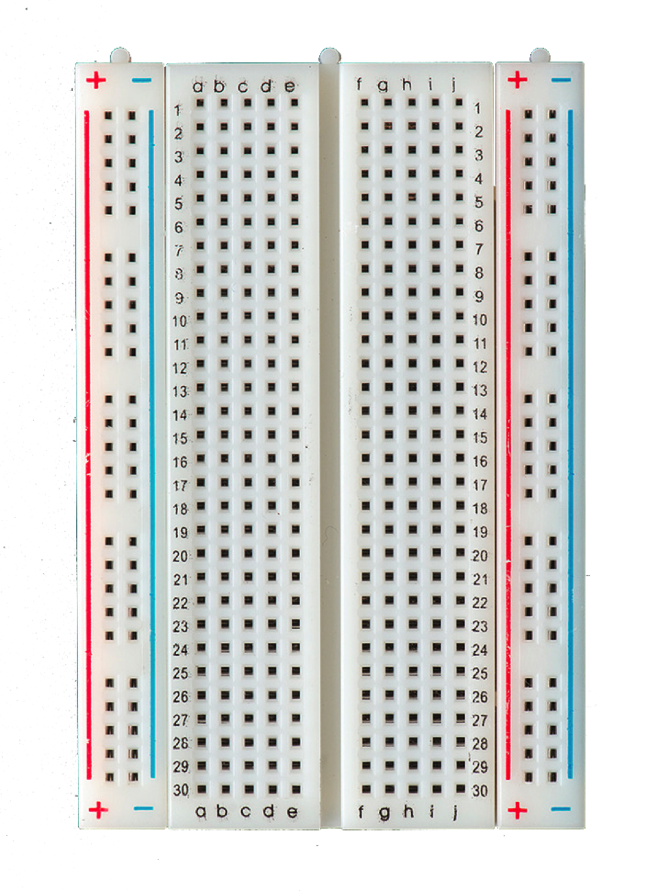
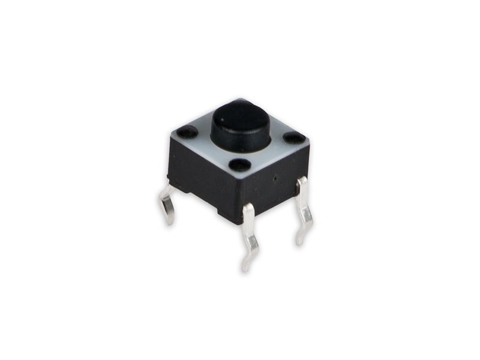
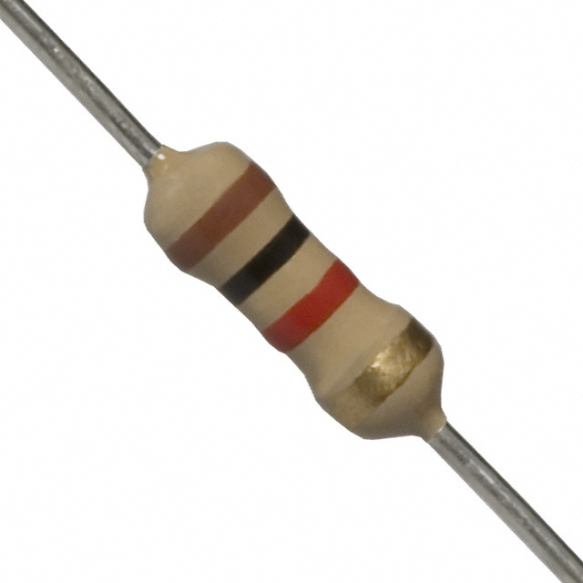

Les 2: Stoplicht
In deze les gaan wij gebruik maken van de functie Digital Input van de Arduino. De Arduino kan niet alleen signalen uitzenden, maar ook ontvangen. Door middel van deze signalen kan de Arduino acties uitvoeren, zoals lampjes laten knipperen, een geluid maken of gegevens opslaan.
Componenten
De volgende componenten worden gebruikt in deze les:
| 1x Arduino Uno |  |
1x Breadboard |  |
| 3x Weerstand van 270 Ohm |  |
3x LED |  |
| 1x button |  | 1x Weerstand van 1k Ohm |  |
Stoplicht
De Arduino kan verschillende signalen ontvangen, namelijk analoog en digitaal. In deze les gaan wij werken met digitaal. Een digitaal signaal kan maar twee waardes bevatten, een hoog signaal en een laag signaal. Dit kan je vergelijken met aan of uit, 0 of 1, waar of niet waar.
Om deze les te maken is de volgende schakeling nodig, die je hiernaast kan zien. Deze schakeling is iets uitgebreider dan de schakeling van les 1. Hier zijn drie lampjes aangesloten op de Arduino. Deze worden nog steeds hetzelfde aangesloten als in les 1, hierbij moet wel worden opgelet hoe de lampjes op de Arduino worden aangesloten. Alle lampjes kunnen dezelfde grond delen, maar hebben allemaal een eigen genummerde digitale poort op de Arduino voor de aansturing. Als deze op dezelfde genummerde poort worden aangesloten, gaan de lampjes tegelijk knipperen. Dit is natuurlijk niet de bedoeling, of dit is wat jijzelf wilde doen.
Wat nieuw aan de schakeling is, is de push button. Deze wordt aangesloten met drie draadjes.
- Positief 5V
- Negatief, ook wel grond genoemd
- Signaal lijn of data lijn
- Er gaat een positief signaal door de knop naar grond
- Wordt erop de knop gedrukt, dan gaat de stroom via de data lijn terug naar de Arduino
De weerstand bij de knop zorgt er ook voor dat er geen lekstroom onstaat richting de Arduino over de data lijn, dit zou een valse waarde zijn.
De opdracht
De bedoeling is dat je de lampjes gaat manipuleren door middel van de knop. Enkele voorbeelden zijn:
- Je drukt op de knop en alle lampjes gaan branden
- Je drukt op de knop en 1 lampje gaat branden, je drukt nog een keer en het volgende lampje gaat branden